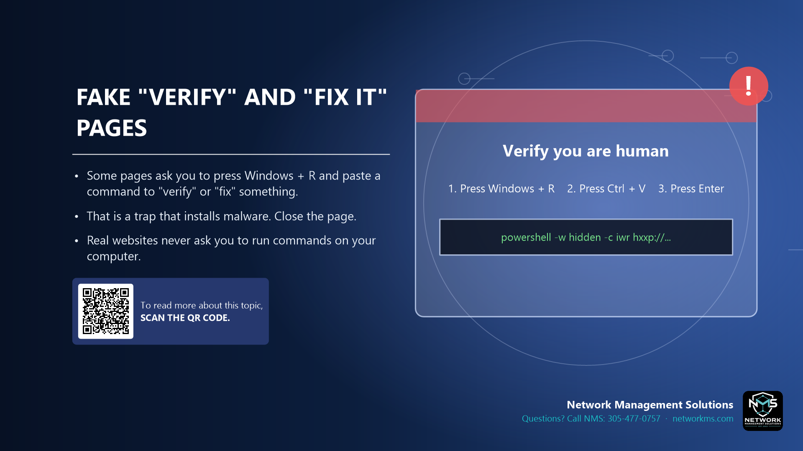

Fake "verify" and "fix it" pages

- Some pages ask you to press Windows + R and paste a command to "verify" or "fix" something.
- That is a trap that installs malware. Close the page.
- Real websites never ask you to run commands on your computer.
A growing scam shows a fake CAPTCHA ("Verify you are human") or a fake error message with steps: press Windows + R, press Ctrl + V, press Enter. The page has already copied a malicious command to your clipboard.
Following the steps runs the attacker's program with your permissions. No real website, CAPTCHA or browser update works this way.
If you see this, close the browser tab. If you already ran it, disconnect from the network and call NMS right away.
Not sure about an email, text or call? Call NMS before you click: 305-477-0757 · networkms.com